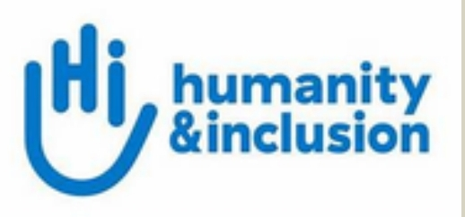

1. DIRECTORIO LOCAL --- ESTADO DE OAXACA
1. SISTEMA DIF OAXACA

Municipio: Oaxaca de Juárez
Dirección: Vicente Guerrero No. 114, Col. Miguel Alemán, C.P. 68120, Oaxaca de Juárez, Oax.
Teléfono: 951 501 5050
Brinda programas de asistencia social y atención a personas con discapacidad. Cuenta con entrega de apoyos funcionales (sillas de ruedas, bastones, aparatos auditivos), servicios de rehabilitación y atención especializada.
2. CENTRO DE REHABILITACIÓN Y EDUCACIÓN ESPECIAL (CREE)

Municipio: San Bartolo Coyotepec
Dirección: Séptima Privada de Aldama s/n, San Bartolo Coyotepec, Oax.
Teléfono: 951 551 0566
Ofrece medicina física y de rehabilitación, audiología, foniatría, psicología, odontología, terapia física, terapia ocupacional, terapia de lenguaje, trabajo social y laboratorio de fabricación de órtesis y prótesis.
3. CENTRO DE REHABILITACIÓN INTEGRAL DIF BIENESTAR Y CUIDADOS PARA OAXACA

Municipio: San Antonio de la Cal
Dirección: Carretera a Zaachila Km 2.5, San Antonio de la Cal, Oax.
Teléfono: 951 501 5050 ext. 1200
Brinda atención de segundo nivel a personas con discapacidad motriz, visual, neuronal y auditiva, así como a personas con discapacidades temporales o permanentes. Cuenta con servicios de rehabilitación y neurorrehabilitación.
4. CENTRO DE ATENCIÓN INTEGRAL PARA CIEGOS Y DÉBILES VISUALES (CECYD)

Municipio: San Bartolo Coyotepec
Dirección: Séptima Privada de Aldama s/n, San Bartolo Coyotepec, Oax.
Teléfono: 951 350 5355
Ofrece rehabilitación y talleres para personas con discapacidad visual. Incluye enseñanza del sistema Braille, uso del ábaco, escritura en máquina Perkins, orientación y movilidad, actividades de la vida diaria, computación adaptada y música.
5. PROCURADURÍA DE LA DEFENSA DE LAS PERSONAS CON DISCAPACIDAD

Municipio: Oaxaca de Juárez
Dirección: Vicente Guerrero No. 114, Col. Miguel Alemán, C.P. 68120, Oaxaca de Juárez, Oax.
Teléfono: 951 501 5050
Brinda protección, orientación jurídica, asesoría legal y asistencia en asuntos relacionados con los derechos de las personas con discapacidad, interviniendo en casos de discriminación o vulneración de derechos.
6. CENTRO DE REHABILITACIÓN INFANTIL TELETON (CRIT OAXACA)

Municipio: San Raymundo Jalpan
Dirección: Av. Las Campanas No. 1, San Raymundo Jalpan, Oax.
Teléfono: 951 502 1100
Proporciona servicios de rehabilitación neuro-músculo-esquelética e inclusión social principalmente para niñas, niños y adolescentes con discapacidad motriz, además de brindar atención médica multidisciplinaria y acompañamiento familiar.
7. FUNDACIÓN CORAZÓN DOWN

Municipio: Oaxaca de Juárez
Dirección: Xicoténcatl 1017, Barrio de la Noria, C.P. 68100, Oaxaca de Juárez, Oax.
Teléfono: 951 115 3091
Organización enfocada en la atención, estimulación temprana, desarrollo cognitivo y acompañamiento de personas con síndrome de Down y sus familias para promover su plena inclusión educativa y social.
8. CONSEJO ESTATAL DE ORGANIZACIONES DE PERSONAS CON DISCAPACIDAD DEL ESTADO DE OAXACA, A.C.

Municipio: Oaxaca de Juárez
Dirección: Murguía 802, Ruta Independencia, Centro, C.P. 68000, Oaxaca de Juárez, Oax.
Teléfono: 951 513 8379
Representa, articula y promueve los intereses y derechos de diversas organizaciones de personas con discapacidad en el estado de Oaxaca, realizando labores de gestión social e incidencia política.
9. CORAL --- CENTRO OAXAQUEÑO DE REHABILITACIÓN DE AUDICIÓN Y LENGUAJE, A.C.

Municipio: Oaxaca de Juárez
Dirección: Privada de Sierra Negra No. 102, Col. Volcanes, C.P. 68020, Oaxaca de Juárez, Oax.
Teléfono: 951 515 2355
Está orientado a la atención especializada, terapia verbal-auditiva, audiometrías, enseñanza de Lengua de Señas Mexicana y rehabilitación integral relacionada con problemas de audición, lenguaje y comunicación.
10. CENTRO INTERACTIVO DE APOYO Y REHABILITACIÓN PARA PERSONAS CON DISCAPACIDAD TATO LA, A.C.

Municipio: Heroica Ciudad de Huajuapan de León
Dirección: Jazmín No. 27, Col. Jardines del Sur, C.P. 69005, Huajuapan de León, Oax.
Teléfono: 953 532 1234
Ofrece servicios terapéuticos comunitarios, apoyo psicopedagógico, rehabilitación física y talleres de estimulación sensorial para personas con discapacidad en la región de la Mixteca.
11. DIF MUNICIPAL DE OAXACA DE JUÁREZ

Municipio: Oaxaca de Juárez
Dirección: Esteban Baca Calderón s/n, 6ta Etapa INFONAVIT 1ro de Mayo, C.P. 68027, Oaxaca de Juárez, Oax.
Teléfono: 951 400 1149
Brinda servicios de asistencia social, gestión de aparatos ortopédicos, canalizaciones médicas, entregas de apoyos alimentarios y atención médica primaria para familias vulnerables del municipio.
12. CENTRO DE REHABILITACIÓN INTEGRAL DE OAXACA (CRIO)

Municipio: Oaxaca de Juárez
Dirección: Huerto Los Olivos 207, Col. Trinidad de las Huertas, C.P. 68120, Oaxaca de Juárez, Oax.
Teléfono: 951 103 8709
Proporciona servicios especializados de fisioterapia, electroterapia, terapia manual, mecanoterapia y rehabilitación física para pacientes con lesiones neurológicas o traumatológicas.
13. CENTRO DE REHABILITACIÓN DIF OAXACA

Municipio: San Antonio de la Cal
Dirección: Emiliano Zapata 66, 5ta Sección Eucaliptos, C.P. 71235, San Antonio de la Cal, Oax.
Teléfono: 951 501 5050
Ofrece atención pública en terapia física, hidroterapia y ejercicios de recuperación funcional para personas adultas mayores y personas con discapacidad física temporal o permanente.
14. CENTRO DE REHABILITACIÓN INTEGRAL FÍSICA Y MENTAL DR. JUAN JOSÉ ROSAS SUMANO

Municipio: Oaxaca de Juárez
Dirección: Sabinos 509, Col. Reforma, C.P. 68050, Oaxaca de Juárez, Oax.
Teléfono: 951 516 2257
Ofrece atención médica multidisciplinaria relacionada con rehabilitación física, evaluación psiquiátrica, terapia psicológica y tratamiento neurológico integral.
15. FISIOLUCIÓN OAXACA --- CENTRO DE TERAPIA FÍSICA Y REHABILITACIÓN

Municipio: Oaxaca de Juárez
Dirección: C. Pensamientos 404, Col. Reforma, C.P. 68050, Oaxaca de Juárez, Oax.
Teléfono: 951 470 1762
Proporciona servicios privados de terapia física, rehabilitación deportiva, clínica de dolor, acondicionamiento físico adaptado y electroterapia especializada.
16. CLÍNICA DE REHABILITACIÓN RAQUEL

Municipio: Oaxaca de Juárez
Dirección: C. Pensamientos 708, Col. Reforma, C.P. 68050, Oaxaca de Juárez, Oax.
Teléfono: 951 513 4568
Ofrece tratamientos de rehabilitación física general, atención postoperatoria, masoterapia clínica, estimulación temprana y terapia ortopédica.
17. UNIDAD BÁSICA DE REHABILITACIÓN (UBR) DE HUAJUAPAN DE LEÓN

Municipio: Heroica Ciudad de Huajuapan de León
Dirección: Calle Tapia s/n, Col. Centro, C.P. 69000, Huajuapan de León, Oax.
Teléfono: 953 532 0000
Brinda atención descentralizada de rehabilitación de primer nivel a personas con discapacidad motriz mediante mecanoterapia, electroterapia y consulta médica general.
18. UNIDAD BÁSICA DE REHABILITACIÓN (UBR) DE MIAHUATLÁN DE PORFIRIO DÍAZ

Municipio: Miahuatlán de Porfirio Díaz
Dirección: Av. Margarita Maza de Juárez s/n, C.P. 70800, Miahuatlán, Oax.
Teléfono: 951 572 0100
Proporciona terapias físicas para recuperación de movilidad por accidentes o discapacidades permanentes, canalización médica y entrega de sillas de ruedas y muletas.
19. UNIDAD BÁSICA DE REHABILITACIÓN (UBR) DE JUCHITÁN DE ZARAGOZA

Municipio: Heroica Ciudad de Juchitán de Zaragoza
Dirección: Prolongación 16 de Septiembre s/n, Segunda Sección, Juchitán, Oax.
Teléfono: 971 711 1200
Cuenta con servicios completos de rehabilitación en el Istmo: terapia física, estimulación temprana, orientación nutricional, apoyo psicológico, electroterapia e hidroterapia.
20. CENTRO DE ATENCIÓN MÚLTIPLE No. 1 (CAM 01)

Municipio: Oaxaca de Juárez
Dirección: Avenida Vicente Guerrero s/n, Col. Miguel Alemán, C.P. 68120, Oaxaca de Juárez, Oax.
Teléfono: 951 514 7670
Brinda educación especial escolarizada pública a niñas, niños y jóvenes con discapacidad múltiple o severa en niveles de educación inicial, preescolar, primaria y formación para el trabajo.
2. DIRECTORIO NACIONAL --- MÉXICO
1. SECRETARÍA DE BIENESTAR - PENSIÓN PARA EL BIENESTAR DE LAS PERSONAS CON DISCAPACIDAD PERMANENTE

Municipio / Alcaldía: Cuauhtémoc, Ciudad de México (Cobertura Nacional)
Dirección: Av. Paseo de la Reforma 116, Col. Juárez, Alcaldía Cuauhtémoc, C.P. 06600, Ciudad de México.
Teléfono: 800 639 4264
Otorga un apoyo económico directo y bimestral a niñas, niños, jóvenes y personas con discapacidad permanente para mejorar su calidad de vida y disminuir la brecha de desigualdad social en todo el país.
2. INSTITUTO NACIONAL DE REHABILITACIÓN LUIS GUILLERMO IBARRA IBARRA (INRLGII)

Municipio / Alcaldía: Tlalpan, Ciudad de México
Dirección: Calzada México-Xochimilco No. 289, Col. Arenal de Guadalupe, Alcaldía Tlalpan, C.P. 14389, Ciudad de México.
Teléfono: 55 5999 1000
Ofrece atención médica de alta especialidad en rehabilitación física, audiología, foniatría, ortopedia, prótesis, órtesis e investigación médica preventiva y de recuperación funcional.
3. SISTEMA NACIONAL PARA EL DESARROLLO INTEGRAL DE LA FAMILIA (SNDIF / DIF NACIONAL)

Municipio / Alcaldía: Benito Juárez, Ciudad de México
Dirección: Av. Emiliano Zapata 340, Col. Portales Afectados, Alcaldía Benito Juárez, C.P. 03300, Ciudad de México.
Teléfono: 55 3003 2200
Coordina políticas de asistencia social a nivel federal, dona ayudas funcionales (sillas de ruedas, bastones, auxiliares auditivos) y supervisa los Centros de Rehabilitación Especializada del país.
4. CONSEJO NACIONAL PARA EL DESARROLLO Y LA INCLUSIÓN DE LAS PERSONAS CON DISCAPACIDAD (CONADIS)

Municipio / Alcaldía: Benito Juárez / Coyoacán, Ciudad de México
Dirección: Calle San Francisco No. 1374, Col. Del Valle, Alcaldía Benito Juárez, C.P. 03100, Ciudad de México.
Teléfono: 55 5005 5200
Órgano rector que establece la política pública nacional para la inclusión plena, accesibilidad universal, ejercicio de derechos humanos y no discriminación de las personas con discapacidad.
5. FUNDACIÓN TELETÓN MÉXICO, A.C.

Municipio / Alcaldía: Tlalpan, Ciudad de México (Sede Nacional)
Dirección: Av. del Imán No. 2, Col. Caracol, Alcaldía Tlalpan, C.P. 14050, Ciudad de México.
Teléfono: 800 835 3866
Administra la red de Centros de Rehabilitación e Inclusión Infantil Teletón (CRIT) en todo México, brindando atención médica, terapias neuromusculoesqueléticas y atención a autismo y cáncer.
6. INSTITUTO NACIONAL DE NEUROLOGÍA Y NEUROCIRUGÍA MANUEL VELASCO SUÁREZ (INNN)

Municipio / Alcaldía: Tlalpan, Ciudad de México
Dirección: Av. Insurgentes Sur No. 3877, Col. La Fama, Alcaldía Tlalpan, C.P. 14269, Ciudad de México.
Teléfono: 55 5606 3822
Atención clínica de tercer nivel, neurocirugía, diagnóstico de trastornos neurológicos, terapia neuropsicológica y tratamiento integral de discapacidades originadas por afecciones del sistema nervioso.
7. COMISIÓN NACIONAL DE LOS DERECHOS HUMANOS (CNDH) - PROGRAMA DE DISCAPACIDAD

Municipio / Alcaldía: Álvaro Obregón, Ciudad de México
Dirección: Periférico Sur No. 4118, Col. Jardines del Pedregal, Alcaldía Álvaro Obregón, C.P. 01900, Ciudad de México.
Teléfono: 800 715 2000
Atención y defensa legal contra violaciones de derechos humanos a personas con discapacidad, asesoría jurídica gratuita y vigilancia del cumplimiento de tratados internacionales.
8. COMITÉ PARALÍMPICO MEXICANO (COPAME)

Municipio / Alcaldía: Iztacalco, Ciudad de México
Dirección: Av. Viaducto Río de la Piedad s/n, Col. Granjas México, Alcaldía Iztacalco, C.P. 08400, Ciudad de México.
Teléfono: 55 5803 0100
Promueve el deporte adaptado de alto rendimiento en México, la clasificación funcional de atletas paralímpicos y su preparación para competencias internacionales y Juegos Paralímpicos.
9. INSTITUTO NACIONAL DE PEDIATRÍA (INP) - DEPARTAMENTO DE REHABILITACIÓN

Municipio / Alcaldía: Coyoacán, Ciudad de México
Dirección: Av. Insurgentes Sur No. 3700-C, Col. Insurgentes Cuicuilco, Alcaldía Coyoacán, C.P. 04530, Ciudad de México.
Teléfono: 55 1084 0900
Evaluación especializada, diagnósticos pediátricos y tratamiento multidisciplinario de rehabilitación para niñas y niños con anomalías congénitas o discapacidades del desarrollo.
10. ASOCIACIÓN PRO PERSONAS CON PARÁLISIS CEREBRAL (APAC, I.A.P.)

Municipio / Alcaldía: Benito Juárez, Ciudad de México
Dirección: Calle Dr. Gabriel Mancera No. 1412, Col. Del Valle Sur, Alcaldía Benito Juárez, C.P. 03100, Ciudad de México.
Teléfono: 55 5604 4144
Ofrece servicios de educación especializada, rehabilitación física, servicios médicos, apoyo psicológico y capacitación laboral para personas con parálisis cerebral y discapacidades afines.
11. LIBRE ACCESO, A.C.

Municipio / Alcaldía: Benito Juárez, Ciudad de México
Dirección: San Francisco No. 656, Col. Del Valle, Alcaldía Benito Juárez, C.P. 03100, Ciudad de México.
Teléfono: 55 5523 0086
Organización pionera en México que asesora e impulsa proyectos de eliminación de barreras físicas y urbanísticas, promoviendo la accesibilidad universal en espacios públicos y privados.
12. FEDERACIÓN MEXICANA DE DEPORTES PARA CIEGOS Y DÉBILES VISUALES, A.C. (FEMEDECIDEVI)

Municipio / Alcaldía: Iztacalco, Ciudad de México
Dirección: Av. Río Churubusco s/n, Col. Gabriel Ramos Millán, Alcaldía Iztacalco, C.P. 08000, Ciudad de México.
Teléfono: 55 5803 0100
Fomenta, regula y coordina la práctica deportiva adaptada para personas con discapacidad visual en disciplinas como Golbol, Natación, Atletismo y Futbol 5 para ciegos.
13. CONFEDERACIÓN MEXICANA DE ORGANIZACIONES EN FAVOR DE LA PERSONA CON DISCAPACIDAD INTELECTUAL (CONFE)

Municipio / Alcaldía: Cuajimalpa de Morelos, Ciudad de México
Dirección: Carretera México-Toluca No. 5215, Col. Lomas de Memetla, Alcaldía Cuajimalpa, C.P. 05330, Ciudad de México.
Teléfono: 55 5292 1390
Red nacional que brinda estimulación temprana, educación especial, talleres de capacitación laboral e inclusión en empleos ordinarios para personas con discapacidad intelectual.
14. INSTITUTO NACIONAL DE LAS PERSONAS ADULTAS MAYORES (INAPAM)

Municipio / Alcaldía: Benito Juárez, Ciudad de México
Dirección: Calle Petén No. 419, Col. Vértiz Narvarte, Alcaldía Benito Juárez, C.P. 03600, Ciudad de México.
Teléfono: 55 5925 5330
Atención integral y credencialización a adultos mayores y personas de la tercera edad con discapacidad, vinculando beneficios de salud, transporte, vivienda y centros de día.
15. INSTITUTO MEXICANO DEL SEGURO SOCIAL (IMSS) - UNIDADES DE MEDICINA FÍSICA Y REHABILITACIÓN

Municipio / Alcaldía: Cuauhtémoc, Ciudad de México (Oficinas Centrales)
Dirección: Av. Paseo de la Reforma No. 476, Col. Juárez, Alcaldía Cuauhtémoc, C.P. 06600, Ciudad de México.
Teléfono: 800 623 2323
Servicios de rehabilitación laboral, física, ortopédica y terapia ocupacional para derechohabientes a nivel nacional, además de la emisión de dictámenes de invalidez y prótesis.
16. ISSSTE - CENTRO DE REHABILITACIÓN Y MEDICINA FÍSICA

Municipio / Alcaldía: Tlalpan, Ciudad de México
Dirección: Av. San Fernando No. 547, Col. Toriello Guerra, Alcaldía Tlalpan, C.P. 14050, Ciudad de México.
Teléfono: 55 5140 9617
Atención médica, terapias de rehabilitación postquirúrgica, apoyo ortopédico y reacondicionamiento físico para trabajadores del Estado y sus familias con discapacidad.
17. FUNDACIÓN HUMANISTA DE AYUDA A DISCAPACITADOS (FHADI, A.C.)

Municipio / Alcaldía: Benito Juárez, Ciudad de México
Dirección: Av. Colonia del Valle No. 423, Col. Del Valle Central, C.P. 03100, Ciudad de México.
Teléfono: 55 5575 3656
Programa integral de desarrollo humano, rehabilitación emocional, independencia personal e inclusión laboral para personas con discapacidad motriz adquirida.
18. ASOCIACIÓN MEXICANA DE AUDIOLOGÍA, FONIATRÍA Y OTONEUROCIRUGÍA (AMAFON, A.C.)

Municipio / Alcaldía: Benito Juárez, Ciudad de México
Dirección: Calle Texas No. 61, Col. Nápoles, Alcaldía Benito Juárez, C.P. 03810, Ciudad de México.
Teléfono: 55 5523 4590
Agrupa a especialistas médicos en audición, voz y lenguaje para la investigación, diagnóstico oportuno, capacitación técnica y difusión de tratamientos de discapacidad auditiva.
19. VIDA INDEPENDIENTE MÉXICO (VIM, A.C.)

Municipio / Alcaldía: Cuauhtémoc, Ciudad de México
Dirección: Av. Río Lerma No. 198, Col. Cuauhtémoc, Alcaldía Cuauhtémoc, C.P. 06500, Ciudad de México.
Teléfono: 55 5208 0388
Imparte cursos intensivos de manejo de silla de ruedas todoterreno, dona sillas activas personalizadas e impulsa la vida independiente y la inclusión laboral de personas con discapacidad motora.
20. DIRECCIÓN GENERAL DE EDUCACIÓN ESPECIAL - SEP

Municipio / Alcaldía: Cuauhtémoc, Ciudad de México
Dirección: Calle República de Brasil No. 31, Centro Histórico, Alcaldía Cuauhtémoc, C.P. 06000, Ciudad de México.
Teléfono: 800 288 6688
Rige el modelo de educación inclusiva en México a través de los Centros de Atención Múltiple (CAM) y la Unidad de Servicios de Apoyo a la Educación Regular (USAER) en las escuelas públicas del país.
3. DIRECTORIO INTERNACIONAL --- MUNDIAL
1. ORGANIZACIÓN MUNDIAL DE LA SALUD (OMS) - PROGRAMA DE DISCAPACIDAD Y REHABILITACIÓN

Sede / País: Ginebra, Suiza (Cobertura Global)
Dirección: Avenue Appia 20, 1211 Genève 27, Suiza.
Contacto: +41 22 791 2111
Elabora directrices globales sobre rehabilitación, recopila datos de salud sobre discapacidad e impulsa políticas públicas y tecnologías asistivas para países miembros de la ONU.
2. COMITÉ SOBRE LOS DERECHOS DE LAS PERSONAS CON DISCAPACIDAD (ONU-CDPD)

Sede / País: Ginebra, Suiza
Dirección: Palais des Nations, 1211 Genève 10, Suiza.
Contacto: +41 22 917 9220
Supervisa la aplicación internacional de la Convención sobre los Derechos de las Personas con Discapacidad y evalúa los informes de cumplimiento de los Estados partes.
3. UNICEF - SECCIÓN DE INCLUSIÓN DE NIÑOS CON DISCAPACIDAD

Sede / País: Nueva York, Estados Unidos
Dirección: 3 United Nations Plaza, New York, NY 10017, EE. UU.
Contacto: +1 212 326 7000
Promueve los derechos de niñas, niños y adolescentes con discapacidad a nivel mundial, garantizando su acceso a la educación inclusiva, salud, nutrición y protección social.
4. ORGANIZACIÓN INTERNACIONAL DEL TRABAJO (OIT) - RED GLOBAL SOBRE DISCAPACIDAD

Sede / País: Ginebra, Suiza
Dirección: Route des Morillons 4, CH-1211 Genève 22, Suiza.
Contacto: +41 22 799 6111
Fomenta la inclusión laboral, la formación profesional y el trabajo decente para personas con discapacidad mediante alianzas estratégicas con empresas internacionales.
5. ALIANZA INTERNACIONAL DE LA DISCAPACIDAD (IDA - INTERNATIONAL DISABILITY ALLIANCE)

Sede / País: Ginebra, Suiza
Dirección: 150 Route de Ferney, PO Box 2100, CH-1211 Ginebra, Suiza.
Contacto: +41 22 788 4273
Red global que agrupa a más de 1,100 organizaciones de personas con discapacidad para incidir en la ONU y en agendas internacionales de desarrollo sostenible.
6. UNIÓN MUNDIAL DE CIEGOS (UMC / WBU)

Sede / País: Toronto, Canadá
Dirección: 1929 Bayview Avenue, Toronto, Ontario, M4G 3E8, Canadá.
Contacto: +1 416 486 9698
Defiende internacionalmente los derechos de personas ciegas y con baja visión, promoviendo el acceso al libro impreso, la tecnología adaptada y el sistema Braille.
7. FEDERACIÓN MUNDIAL DE SORDOS (WFD - WORLD FEDERATION OF THE DEAF)

Sede / País: Helsinki, Finlandia
Dirección: Light House, Elimäenkatu 17-19, 00510 Helsinki, Finlandia.
Contacto: info@wfd.fi
Promueve el reconocimiento oficial de las lenguas de señas a nivel internacional, los derechos culturales de las comunidades sordas y el acceso universal a la interpretación.
8. INCLUSIÓN INTERNACIONAL (INCLUSION INTERNATIONAL)

Sede / País: Londres, Reino Unido
Dirección: 123 Holloway Road, Londres N7 8LT, Reino Unido.
Contacto: +44 20 7619 7700
Red mundial de personas con discapacidad intelectual y sus familias que lucha por el aprendizaje inclusivo, el derecho a decidir y la vida autónoma en la comunidad.
9. REHABILITATION INTERNATIONAL (RI GLOBAL)

Sede / País: Nueva York, Estados Unidos
Dirección: 866 United Nations Plaza, Suite 422, New York, NY 10017, EE. UU.
Contacto: +1 212 420 1500
Organización global dedicada a la prevención de discapacidades, rehabilitación física, servicios de accesibilidad técnica e investigación sobre inclusión social.
10. COMITÉ PARALÍMPICO INTERNACIONAL (IPC)

Sede / País: Bonn, Alemania
Dirección: Adenauerallee 212-214, 53113 Bonn, Alemania.
Contacto: +49 228 20970
Órgano de gobierno del Movimiento Paralímpico a nivel mundial, organizador de los Juegos Paralímpicos y promotor del deporte adapado como herramienta de inclusión social.
11. SPECIAL OLYMPICS INTERNATIONAL

Sede / País: Washington, D.C., Estados Unidos
Dirección: 1133 19th Street NW, Washington, D.C. 20036, EE. UU.
Contacto: +1 202 628 3630
Ofrece entrenamiento deportivo, competencias durante todo el año y programas comunitarios de salud integral para niños y adultos con discapacidad intelectual.
12. HUMANITY & INCLUSION (HANDICAP INTERNATIONAL)

Sede / País: Lyon, Francia
Dirección: 138 Avenue de los Frères Lumière, 69008 Lyon, Francia.
Contacto: +33 4 78 69 79 79
Proporciona rehabilitación, prótesis, apoyo psicosocial y asistencia humanitaria en situaciones de desastre y conflicto para personas con discapacidad y poblaciones vulnerables.
13. LIGHT FOR THE WORLD

Sede / País: Viena, Austria
Dirección: Niederhofstraße 26, 1120 Viena, Austria.
Contacto: +43 1 810 1300
Organización de desarrollo especializada en la salud ocular, prevención de la ceguera evitable y garantía de los derechos de personas con discapacidad en regiones vulnerables.
14. CBM GLOBAL DISABILITY INCLUSION

Sede / País: Bensheim, Alemania
Dirección: Stubenwald-Allee 5, 64625 Bensheim, Alemania.
Contacto: +49 6251 1290
Ofrece atención médica, rehabilitación comunitaria, asistencia humanitaria accesible e inclusión educativa en países en vías de desarrollo.
15. ADD INTERNATIONAL (ACTION ON DISABILITY AND DEVELOPMENT)

Sede / País: Londres, Reino Unido
Dirección: The Foundry, 17 Oval Way, Londres SE11 5RR, Reino Unido.
Contacto: +44 20 3752 5730
Apoya activistas y organizaciones locales de personas con discapacidad en África y Asia mediante financiamiento, capacitación de liderazgo y defensa de derechos humanos.
16. DOWN SYNDROME INTERNATIONAL (DSi)

Sede / País: Londres, Reino Unido
Dirección: Langdon Down Centre, 2A Langdon Park, Teddington TW11 9PS, Reino Unido.
Contacto: +44 20 8614 5100
Red global dedicada a mejorar la calidad de vida de las personas con síndrome de Down y promover su plena inclusión en todos los ámbitos de la sociedad.
17. AUTISM EUROPE

Sede / País: Bruselas, Bélgica
Dirección: Rue Montoyer 39, 1000 Bruselas, Bélgica.
Contacto: +32 2 675 7505
Organización que concientiza, promueve la investigación y defiende los derechos de las personas autistas y sus familias ante instituciones internacionales y gobiernos.
18. ORGANIZACIÓN PANAMERICANA DE LA SALUD (OPS) - ÁREA DE REHABILITACIÓN

Sede / País: Washington, D.C., Estados Unidos
Dirección: 525 23rd St NW, Washington, D.C. 20037, EE. UU.
Contacto: +1 202 974 3000
Brinda asistencia técnica a los países de las Américas para fortalecer sus sistemas de salud pública, servicios de rehabilitación y acceso a ayudas técnicas ortopédicas.
19. RED LATINOAMERICANA DE ORGANIZACIONES DE LA SOCIEDAD CIVIL DE PERSONAS CON DISCAPACIDAD Y SUS FAMILIAS (RIADIS)

Sede / País: Quito, Ecuador (Cobertura Latinoamérica)
Dirección: Av. 10 de Agosto y Luis Cordero, Quito, Ecuador.
Contacto: +593 2 250 8055
Red regional que representa a organizaciones de 19 países de América Latina para promover el desarrollo inclusivo con base comunitaria y el cumplimiento de la Convención ONU.
20. UNIÓN LATINOAMERICANA DE CIEGOS (ULAC)

Sede / País: Montevideo, Uruguay
Dirección: Calle Mercedes 1327, Montevideo, Uruguay.
Contacto: +598 2908 4127
Organización no gubernamental que coordina y fortalece a las asociaciones de ciegos y personas con baja visión de la región latinoamericana en materia de educación y accesibilidad.
BIBLIOGRAFÍA Y FUENTES CONSULTADAS
1. Fuentes Locales (Estado de Oaxaca)
- Sistema DIF Estatal Oaxaca. (2024). Directorio de Servicios y Centros de Atención. Gobierno del Estado de Oaxaca. https://www.oaxaca.gob.mx/dif/
- Centro de Rehabilitación e Inclusión Infantil Teletón Oaxaca. (2024). Modelos de Atención Multisensorial y Motriz. Fundación Teletón México. https://teleton.org/
- Instituto Estatal de Educación Pública de Oaxaca (IEEPO). (2023). Directorio de Centros de Atención Múltiple (CAM) y USAER en Oaxaca. SEP Oaxaca.
2. Fuentes Nacionales (México)
- Secretaría de Bienestar. (2024). Pensión para el Bienestar de las Personas con Discapacidad Permanente: Reglas de Operación. Gobierno de México. https://www.gob.mx/bienestar
- Consejo Nacional para el Desarrollo y la Inclusión de las Personas con Discapacidad (CONADIS). (2023). Informe de Accesibilidad e Inclusión Social en México. Secretaría de Bienestar. https://www.gob.mx/conadis
- Instituto Nacional de Rehabilitación Luis Guillermo Ibarra Ibarra (INRLGII). (2024). Guía de Servicios Médicos y de Rehabilitación. Secretaría de Salud. https://www.inr.gob.mx
3. Fuentes Internacionales (Mundial)
- Organización Mundial de la Salud (OMS). (2022). Informe Mundial sobre la Salud y la Discapacidad. Ediciones de la OMS. https://www.who.int/es
- Organización de las Naciones Unidas (ONU). (2006). Convención sobre los Derechos de las Personas con Discapacidad (CDPD). Nueva York: Naciones Unidas. https://www.un.org/disabilities/
- International Disability Alliance (IDA). (2023). Global Disability Rights and Inclusion Report. IDA Alliance. https://www.internationaldisabilityalliance.org/